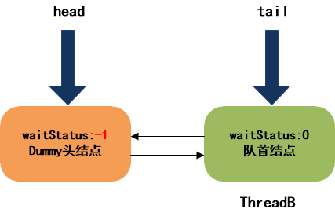
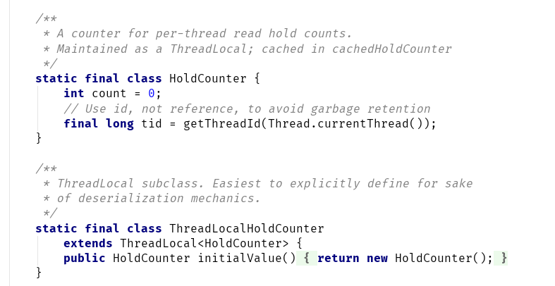

Java多线程进阶（十）—— J.U.C之locks框架：基于AQS的读写锁(5)
一、本章概述
AQS系列的前四个章节，已经分析了AQS的原理，本章将会从ReentrantReadWriteLock出发，给出其内部利用AQS框架的实现原理。
ReentrantReadWriteLock（以下简称RRW），也就是读写锁，是一个比较特殊的同步器，特殊之处在于其对同步状态State的定义与ReentrantLock、CountDownLatch都很不同。通过RRW的分析，我们可以更深刻的了解AQS框架的设计思想，以及对“什么是资源？如何定义资源是否可以被访问？”这一命题有更深刻的理解。
关于ReentrantReadWriteLock的使用和说明，读者可以参考：Java多线程进阶（四）—— juc-locks锁框架：ReentrantReadWriteLock
二、本章示例
和之前的章节一样，本章也通过示例来分析RRW的源码。
假设现在有4个线程，ThreadA、ThreadB、ThreadC、ThreadD。
ThreadA、ThreadB、ThreadD为读线程，ThreadC为写线程：初始时，构造RRM对象：
private final ReentrantReadWriteLock rwl = new ReentrantReadWriteLock();
private final Lock r = rwl.readLock();
private final Lock w = rwl.writeLock();
//ThreadA调用读锁的lock()方法
//ThreadB调用读锁的lock()方法
//ThreadC调用写锁的lock()方法
//ThreadD调用读锁的lock()方法
三、RRW的公平策略原理
1. RRW对象的创建
和ReentrantLock类似，ReentrantReadWriteLock的构造器可以选择公平/非公平策略（默认为非公平策略），RRW内部的FairSync、NonfairSync是AQS的两个子类，分别代表了实现公平策略和非公平策略的同步器：
ReentrantReadWriteLock提供了方法，分别获取读锁/写锁：
ReentrantReadWriteLock.ReadLock和ReentrantReadWriteLock.WriteLock其实就是两个实现了Lock接口的内部类:
2. ThreadA调用读锁的lock()方法
读锁其实是一种共享锁，实现了AQS的共享功能API，可以看到读锁的内部就是调用了AQS的acquireShared方法，该方法前面几章我们已经见过太多次了：
关键来看下ReentrantReadWriteLock是如何实现tryAcquireShared方法的：
读锁获取成功的条件如下：
- 写锁没有被其它线程占用（可被当前线程占用，这种情况属于锁降级）
- 等待队列中的队首没有其它线程（公平策略）
- 读锁重入次数没有达到最大值
- CAS操作修改同步状态值State成功
如果CAS操作失败，会调用fullTryAcquireShared方法，自旋修改State值：
ThreadA调用完lock方法后，等待队列结构如下：

此时：
写锁数量：0
读锁数量：1
3. ThreadB调用读锁的lock()方法
由于读锁是共享锁，且此时写锁未被占用，所以此时ThreadB也可以拿到读锁：
ThreadB调用完lock方法后，等待队列结构如下：

此时：
写锁数量：0
读锁数量：2
4. ThreadC调用写锁的lock()方法
写锁其实是一种独占锁，实现了AQS的独占功能API，可以看到写锁的内部就是调用了AQS的acquire方法，该方法前面几章我们已经见过太多次了：
关键来看下ReentrantReadWriteLock是如何实现tryAcquire方法的，并没有什么特别，就是区分了两种情况：
- 当前线程已经持有写锁
- 写锁未被占用
ThreadC调用完lock方法后，由于存在使用中的读锁，所以会调用acquireQueued并被加入等待队列，这个过程就是独占锁的请求过程（AQS[二]），等待队列结构如下：

此时：
写锁数量：0
读锁数量：2
5. ThreadD调用读锁的lock()方法
这个过程和ThreadA和ThreadB几乎一样，读锁是共享锁，可以重复获取，但是有一点区别：
由于等待队列中已经有其它线程（ThreadC）排在当前线程前，所以readerShouldblock方法会返回true，这是公平策略的含义。
虽然获取失败了，但是后续调用fullTryAcquireShared方法，自旋修改State值，正常情况下最终修改成功，代表获取到读锁：
最终等待队列结构如下：
此时：
写锁数量：0
读锁数量：3
6. ThreadA释放读锁
内部就是调用了AQS的releaseShared方法，该方法前面几章我们已经见过太多次了：
关键来看下ReentrantReadWriteLock是如何实现tryReleaseShared方法的，没什么特别的，就是将读锁数量减1：
注意：
HoldCounter是个内部类，通过与ThreadLocal结合使用保存每个线程的持有读锁数量，其实是一种优化手段。
此时：
写锁数量：0
读锁数量：2
7. ThreadB释放读锁
和ThreadA的释放完全一样，此时：
写锁数量：0
读锁数量：1
8. ThreadD释放读锁
和ThreadA的释放几乎一样，不同的是此时读锁数量为0，tryReleaseShared方法返回true：
此时：
写锁数量：0
读锁数量：0
因此，会继续调用doReleaseShared方法，doReleaseShared方法之前在讲AQS[四]时已经阐述过了，就是一个自旋操作：
该操作会将ThreadC唤醒：
9. ThreadC从原阻塞处继续向下执行
ThreadC从原阻塞处被唤醒后，进入下一次自旋操作，然后调用tryAcquire方法获取写锁成功，并从队列中移除:
等待队列最终状态：
此时：
写锁数量：1
读锁数量：0
10. ThreadC释放写锁
其实就是独占锁的释放，在AQS[二]中，已经阐述过了，不再赘述。
补充一点：如果头结点后面还有等待的共享结点，会以传播的方式依次唤醒，这个过程就是共享结点的唤醒过程，并无区别。
四、总结
本章通过ReentrantReadWriteLock的公平策略，分析了RRW的源码，非公平策略分析方法也是一样的，非公平和公平的最大区别在于写锁的获取上：
在非公平策略中，写锁的获取永远不需要排队，这其实时性能优化的考虑，因为大多数情况写锁涉及的操作时间耗时要远大于读锁，频次远低于读锁，这样可以防止写线程一直处于饥饿状态。
关于ReentrantReadWriteLock，最后有两点规律需要注意：
- 当RRW的等待队列队首结点是共享结点，说明当前写锁被占用，当写锁释放时，会以传播的方式唤醒头结点之后紧邻的各个共享结点。
- 当RRW的等待队列队首结点是独占结点，说明当前读锁被使用，当读锁释放归零后，会唤醒队首的独占结点。
ReentrantReadWriteLock的特殊之处其实就是用一个int值表示两种不同的状态（低16位表示写锁的重入次数，高16位表示读锁的使用次数），并通过两个内部类同时实现了AQS的两套API，核心部分与共享/独占锁并无什么区别。